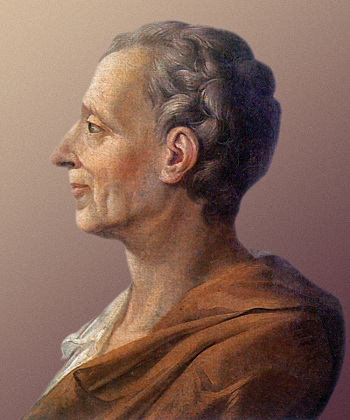

Os três poderes, independentes e coesos entre si, são categorias dos poderes políticos presentes na democracia de um país.
Os três poderes, independentes e coesos entre si, são categorias dos poderes políticos presentes na democracia de um país.
- Poder Executivo;
- Poder Legislativo;
- Poder Judiciário.
Respectivamente, esses poderes são destinados a: executar as resoluções públicas, produzir as leis e julgar os cidadãos.
História
 Montesquieu: político, filósofo e escritor francês.Desde a antiguidade muitos estudiosos, pensadores e filósofos discutiam questões sobre a Política e sua organização.
Entretanto, foi o filósofo, político e escritor francês Charles-Louis de Secondat (1689-1755), mas conhecido por Montesquieu, quem desenvolveu, no século XVIII, a “Teoria da Separação dos Poderes”.
Essa Teoria relatada em sua obra “O Espírito das Leis”, apresentava a divisão dos poderes políticos e seus respectivos campos de atuação.
Vale lembrar que, antes de Montesquieu outros grandes filósofos já haviam feito referência sobre a importância desse modelo de Estado. Como exemplo notório, temos o filósofo grego Aristóteles (384 a.C. -322 a.C.) e sua obra intitulada “Política”.
Desde aquela época, o objetivo central da divisão dos poderes no campo político era o de descentralizar o poder. Isso porque ele estava concentrados nas mãos de um pequeno grupo
A ideia central era de favorecer um Estado mais justo, democrático e igualitário para todos os cidadãos.
Poder Executivo
O Poder Executivo, como o próprio nome já pressupõe, é o poder destinado a executar, fiscalizar e gerir as leis de um país.
No âmbito deste poder está a Presidência da República, Ministérios, Secretarias da Presidência, Órgãos da Administração Pública e os Conselhos de Políticas Públicas.
Sendo assim, essa escala do poder decide e propõe planos de ação de administração e de fiscalização de diversos Programas (social, educação, cultura, saúde, infraestrutura) a fim de garantir qualidade e a eficácia dos mesmos
É válido destacar que no município, o Poder Executivo é representado pelo Prefeito enquanto a nível estatal é representado pelo Governador.
Poder Legislativo
O Poder Legislativo é o poder que estabelece as Leis de um país. Ele é composto pelo Congresso Nacional, ou seja, a Câmara de Deputados, o Senado, Parlamentos, Assembleias, cuja atribuição central é de propor leis destinadas a conduzir a vida do país e de seus cidadãos.
O Poder Legislativo, além de desempenhar o papel de elaboração das leis que regerão a sociedade, também fiscaliza o Poder Executivo.
Poder Judiciário
O Poder Judiciário atua no campo do cumprimento das Leis. É o Poder responsável por julgar as causas conforme a constituição do Estado.
É composto por juízes, promotores de justiça, desembargadores, ministros, representado por Tribunais, com destaque para o Supremo Tribunal Federal – STF.
Essencialmente, o Poder Judiciário tem a função de aplicar a lei, julgar e interpretar os fatos e conflitos, cumprindo desta forma, a Constituição do Estado.
Texto de: Toda Matéria ·